Naturaleza sin límites
Desde travesías de alta montaña hasta escapadas de fin de semana. Rutas sostenibles diseñadas para los que no pueden quedarse quietos.
Para los que no se conforman
Rutas que ponen a prueba tus límites sin poner a prueba el planeta. Naturaleza en estado puro, guías expertos y huella cero.
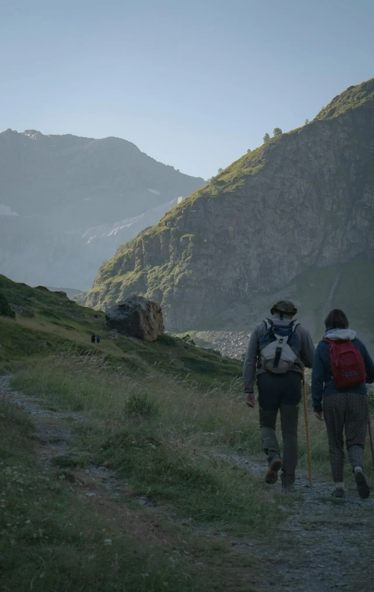
Senderismo7 días atravesando el corazón de los Pirineos aragoneses por rutas de baja huella.
Ver ruta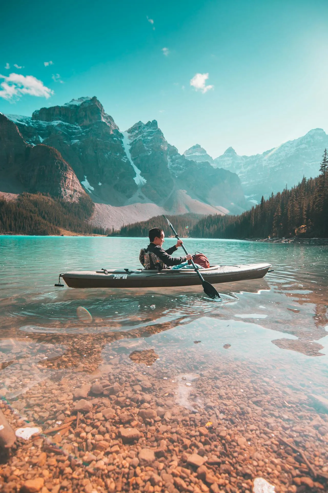
Kayak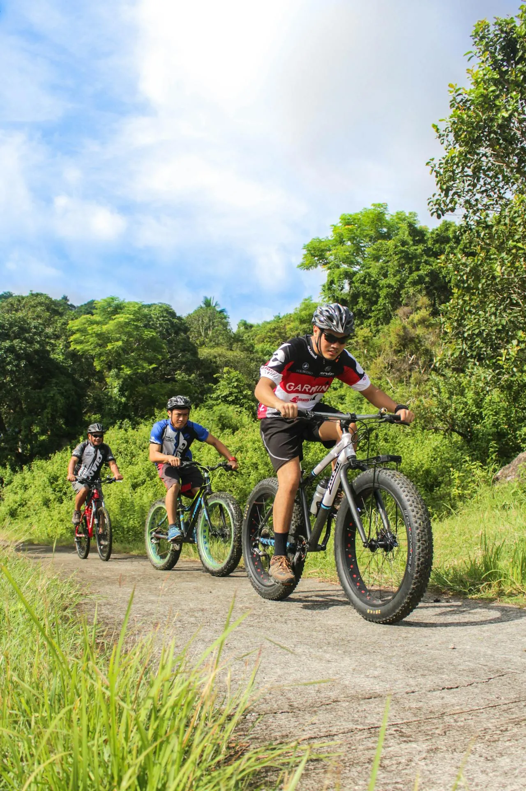
Cicloturismo400 km de antiguas vías ferroviarias convertidas en rutas ciclistas entre bosques.
Ver ruta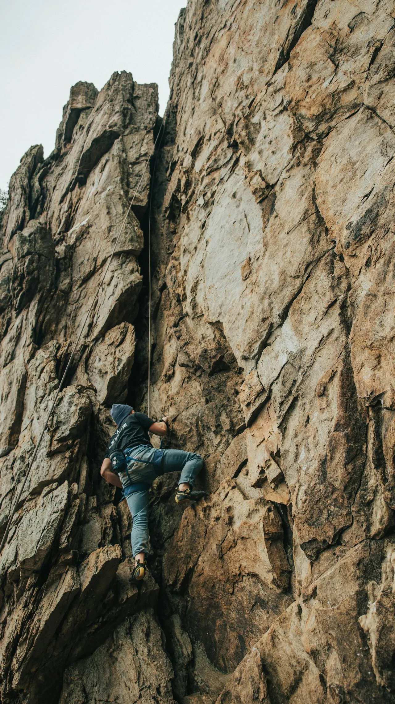
EscaladaIniciación a la escalada en roca en uno de los macizos más icónicos de la Península.
Ver ruta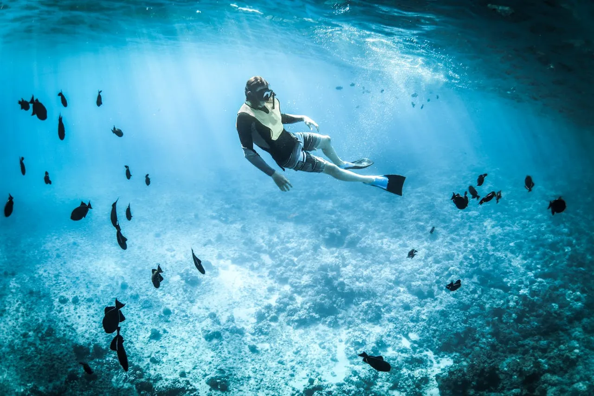
Snorkel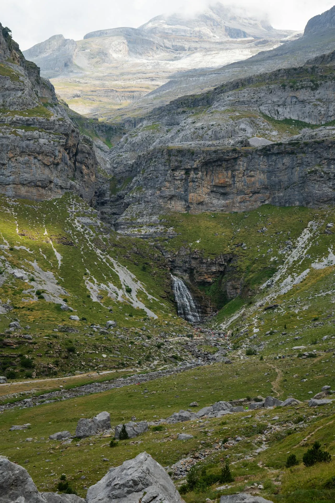
BarranquismoDescenso de barrancos en entornos protegidos con equipo ecológico certificado.
Ver rutaDesconecta en 48 horas
Cuando el tiempo escasea pero la necesidad de naturaleza no. Escapadas pensadas para recargar sin dejar huella.
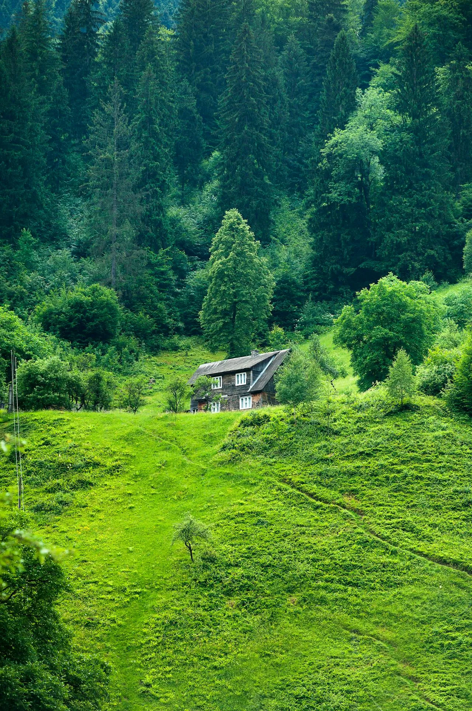
Destacado · 2 noches
Alojamiento con energía solar, baño de bosque guiado y gastronomía de km 0.
Reservar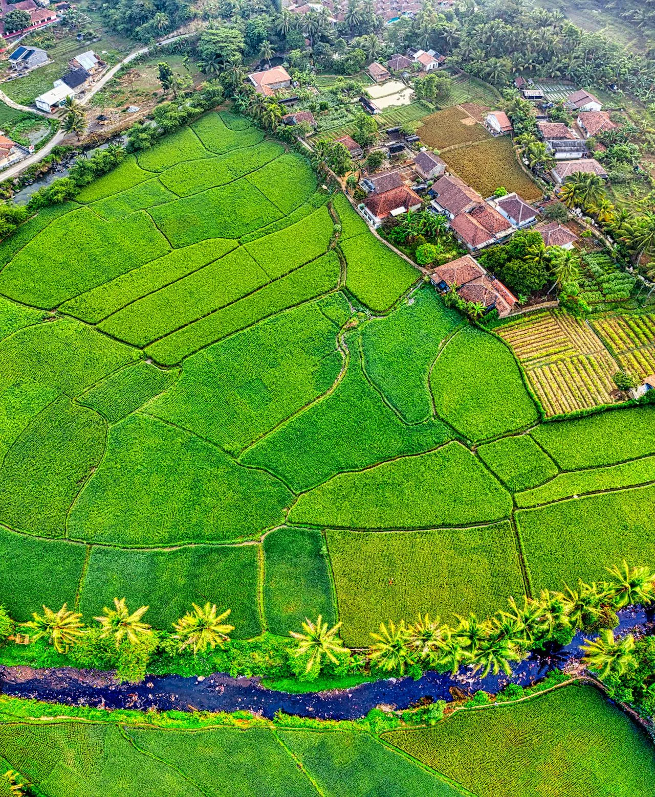
Rural · 1 noche
Vino ecológico, cuevas rupestres y silencio absoluto.
Reservar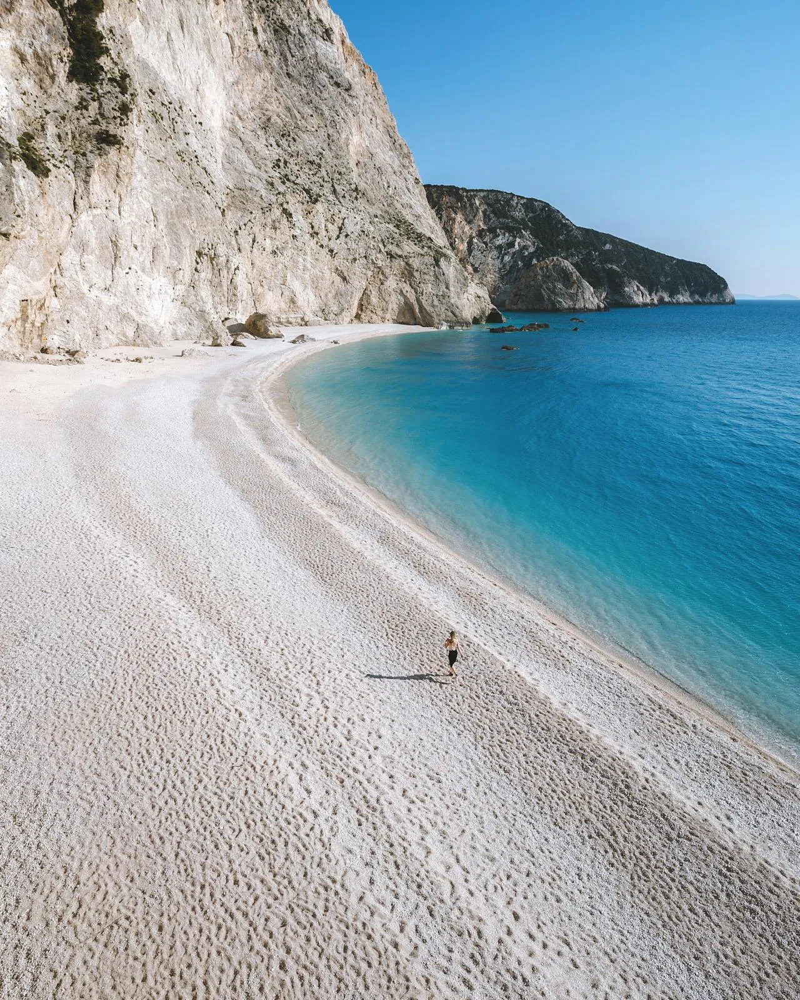
Costa · 2 noches
Snorkel en posidonia, campamento bajo las estrellas y cocina de temporada.
Reservar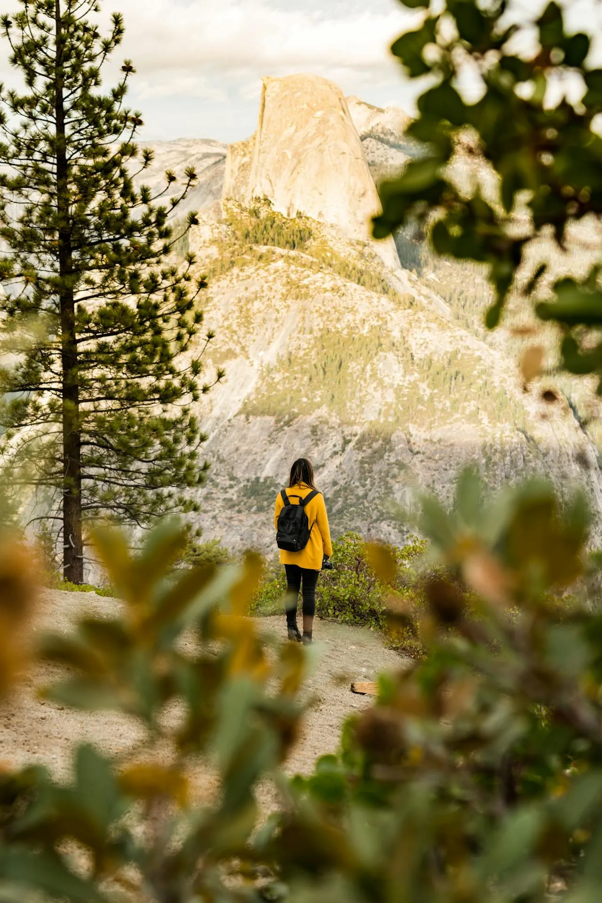
Montaña · 2 noches
Senderismo entre robles, refugio ecológico y amanecer sobre las nieves.
Reservar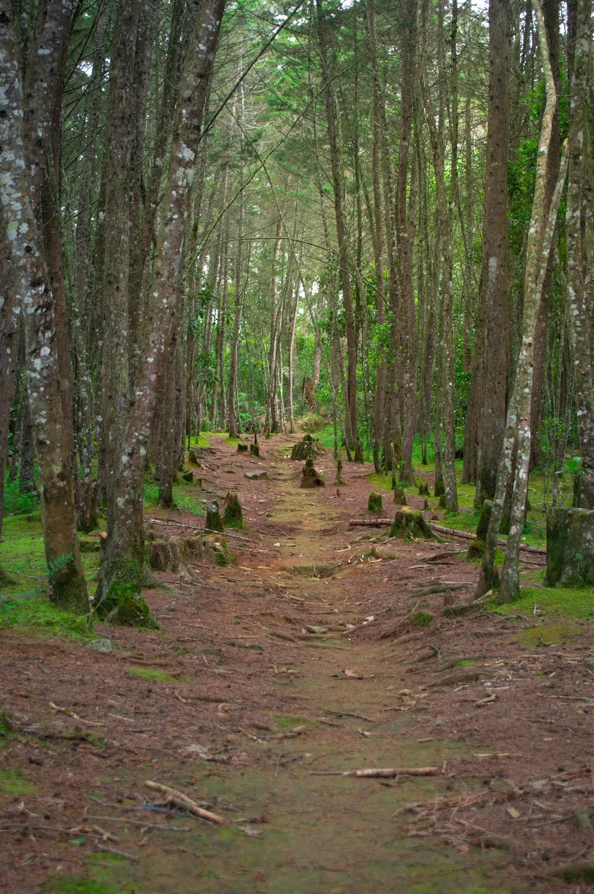
Rural · 2 noches
Entre encinas y cerdos ibéricos, con guía local y cata de productos de la tierra.
ReservarCuéntanos qué tipo de ruta te mueve y nuestro equipo diseñará una experiencia sostenible hecha a tu medida.
Contactar con el equipo Ver todos los destinos